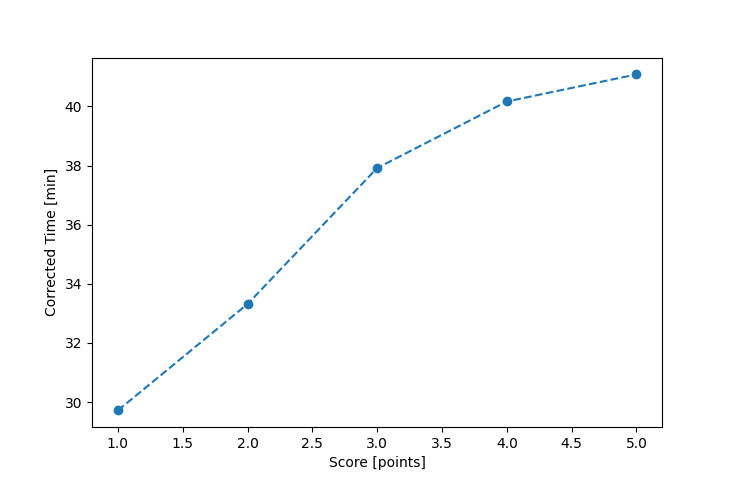

| Wind: | 2-3 (BFT) |
|---|---|
| RC: | Heather_B, Ryan_C, Nick_H |
| Date: | September 21, 2025 |
| Notes: | M2 220 |
| Rank / Score | Name | Boat | Input Time [mm:ss] | Input Offset [mm:ss] | Race Time [mm:ss] | Race Time [s] | Handicap | Corrected Time [s] | Corrected Time [mm:ss] |
|---|---|---|---|---|---|---|---|---|---|
| 1.0 | Ian_O | US-1 | 33:08 | 06:00 | 27:08 | 1628 | 0.91300 | 1783 | 29:43 |
| 2.0 | Michael_S | SF | 39:27 | 06:00 | 33:27 | 2007 | 1.00400 | 1999 | 33:19 |
| 3.0 | Elliott_F | SF | 44:04 | 06:00 | 38:04 | 2284 | 1.00400 | 2275 | 37:55 |
| 4.0 | Adam_E | SF | 46:20 | 06:00 | 40:20 | 2420 | 1.00400 | 2410 | 40:10 |
| 5.0 | John_F | SF | 47:15 | 06:00 | 41:15 | 2475 | 1.00400 | 2465 | 41:05 |

Application Notes:
All race results are unofficial. Official results placements are determined by club officers at the end of seach series.
View source code at https://github.com/imorourke/jcss